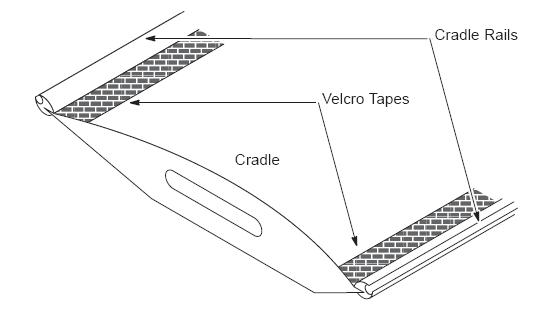
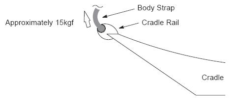

Check that the Velcro tape of the cradle is securely attached. If the Velcro tape has come off, replace the cradle.
Check that the cradle rails are not damaged or cracked. If damaged, replace the cradle as an assembly.
Set the body strap to the cradle rails, then pull the strap by the force of approx. 15 kgf, using a spring balance. Verify that the strap do NOT be removed from the rail. If not, replace the strap or cradle.
Illustration 5: Cradle Rail

Illustration 6: Body Strap Attachment
